Sistemas de Redes de Computadores
1. Teste de Conectividade (Ping) entre Computadores
- Através do comando "ping", realizámos uma verificação de comunicação entre computadores em locais distintos.
- A finalidade era garantir que todos os equipamentos conseguem trocar informações pela rede interna (LAN).
- Esta verificação é fundamental para assegurar que não há obstruções na rede, erros de configuração de endereço IP ou problemas de ligação física.
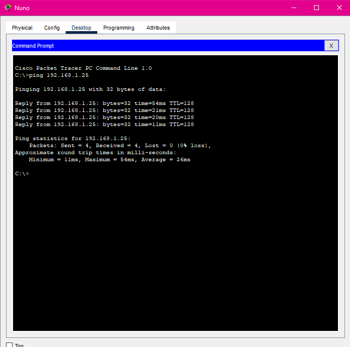
2. Teste de Conectividade (Ping) entre Servidores e Computadores
- Cada máquina das salas realizou o comando ping em direção ao servidor principal.
- Esta verificação confirma a comunicação entre os computadores e os serviços principais da rede.
- Uma resposta positiva indica que os equipamentos partilham a mesma sub-rede ou que existem caminhos de rede adequadamente configurados entre eles.
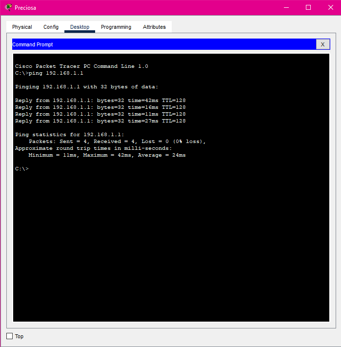
Configuração dos servidores
DNS:
- Para implementar um servidor DNS são necessários os seguintes passos:
- Definir um endereço IP fixo com gateway padrão e servidor DNS
- Configurar o serviço DNS com os nomes dos utilizadores e os seus respectivos endereços IP
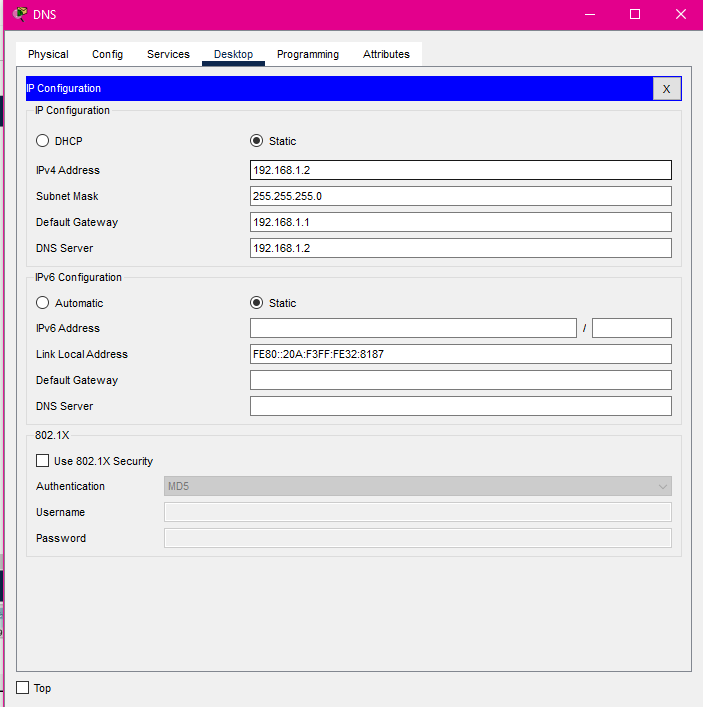
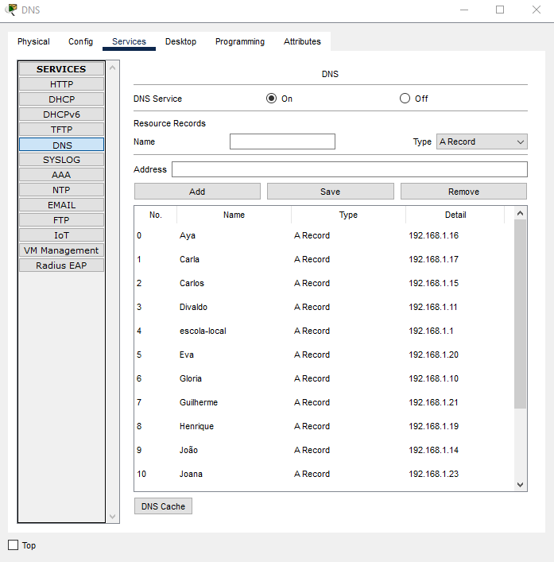
3. Teste de Resolução de Nomes (Ping via DNS)
- Realizámos a verificação de ping utilizando nomes de domínio (em vez de endereços IP) para confirmar que a resolução de nomes através do DNS está a funcionar adequadamente.
- Este procedimento é fundamental para que os utilizadores possam aceder a serviços internos e servidores apenas pelo nome, simplificando a utilização e a manutenção da rede.
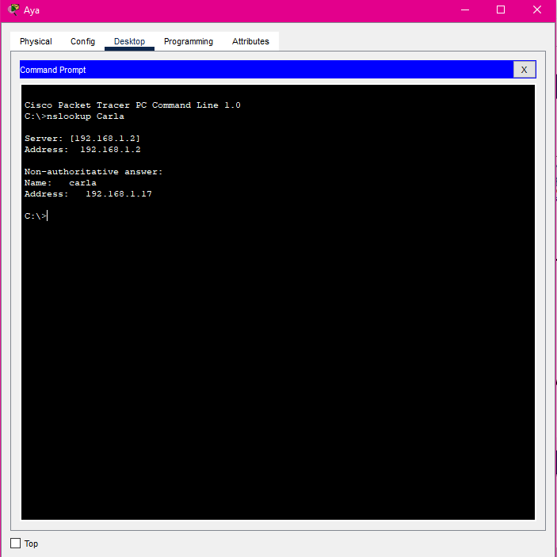
Configuração dos servidores
FTP:
- Para implementar um servidor FTP são necessários os seguintes passos:
- 1. Definir o endereço IP, pode ser através do DHCP
- 2. Registar todos os utilizadores com nome de utilizador e palavra-passe, e estabelecer as permissões individuais, podendo definir utilizadores como o Divaldo como administrador ao seleccionar todas as opções de permissão
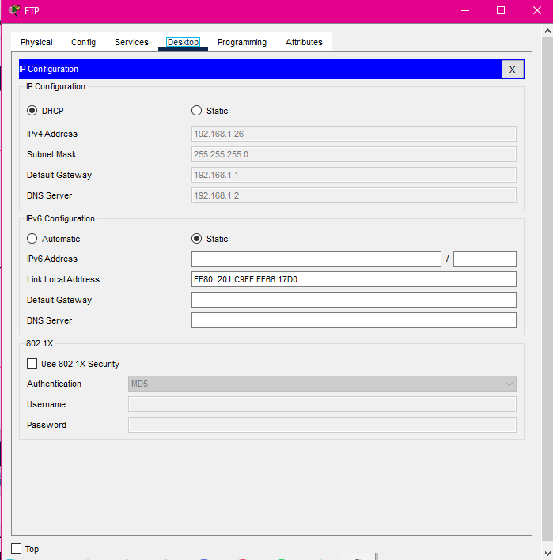
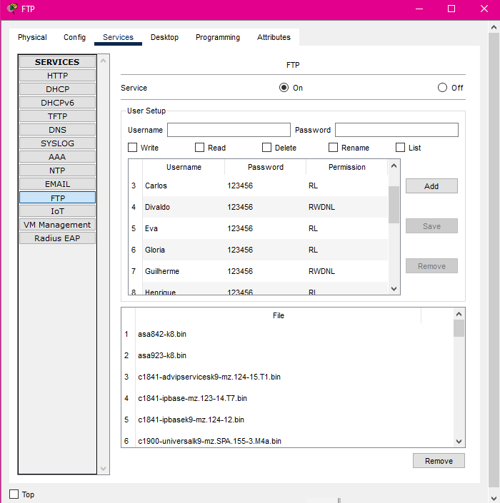
4. Envio de Arquivos via FTP
- Para verificar o FTP, abrimos a linha de comandos e acedemos à conta do utilizador inserindo as credenciais correctas.
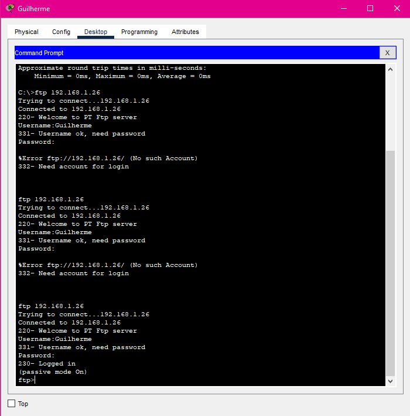
4. Envio de Arquivos via FTP
- Os técnicos de cada sala utilizaram o protocolo FTP para transferir ficheiros para o servidor.
- Esta verificação demonstra que o serviço FTP está operacional, acessível e com as autorizações apropriadas configuradas.
- A transferência de ficheiros via FTP é frequentemente utilizada para actualizações, cópias de segurança e partilha de documentos internos.
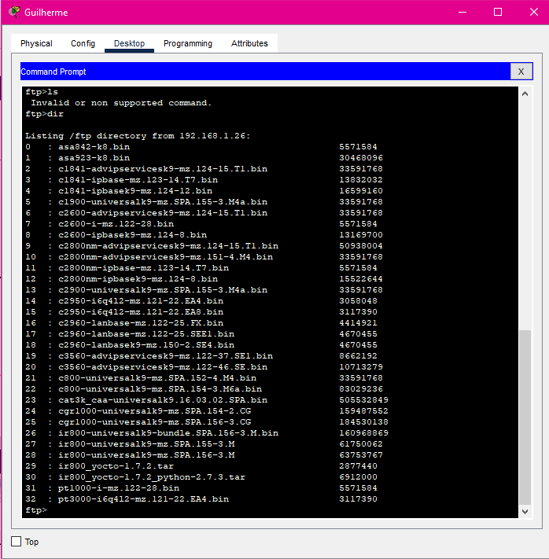
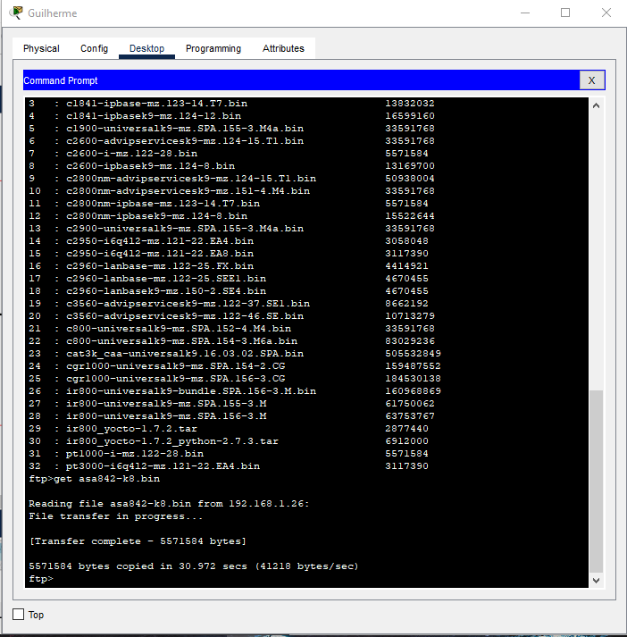
5. Envio e Recepção de E-mails
- Verificámos a comunicação por correio electrónico entre Técnicos, Gestores e Consultores.
- Esta verificação garante que o servidor de correio electrónico (SMTP/IMAP/POP3) está a funcionar e que os utilizadores conseguem trocar mensagens com sucesso.
- A comunicação por correio electrónico é uma das formas mais importantes de intercâmbio de informações em ambientes empresariais.
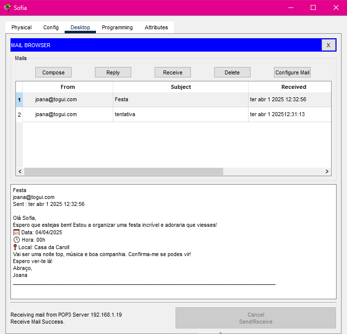
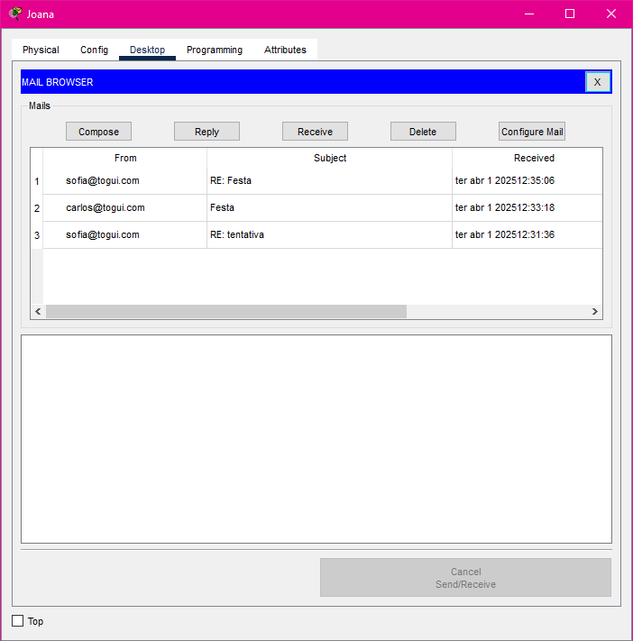
Configuração dos servidores
Correio Electrónico
- Para implementar um servidor de Correio Electrónico são necessários os seguintes passos:
- 1. Definir o endereço IP, pode ser através do DHCP
- 2. Criar um domínio personalizado e registar os utilizadores com nome de utilizador e palavra-passe
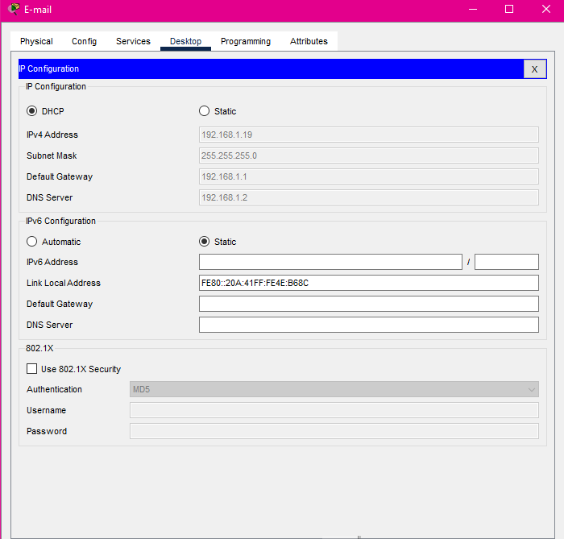
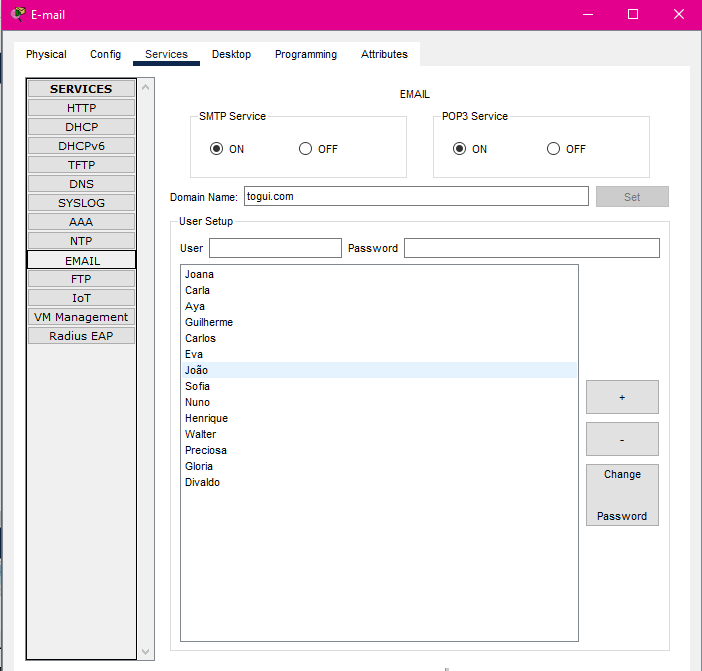
- Após a configuração do servidor de Correio Electrónico, é necessário configurar o correio electrónico pessoal em cada computador:
- 1. Inserir o Nome e o endereço de correio electrónico com o domínio igual ao configurado no servidor
- 2. Inserir o endereço IP do servidor de Correio Electrónico
- 3. Inserir o Nome de utilizador e a palavra-passe igual à configurada no servidor
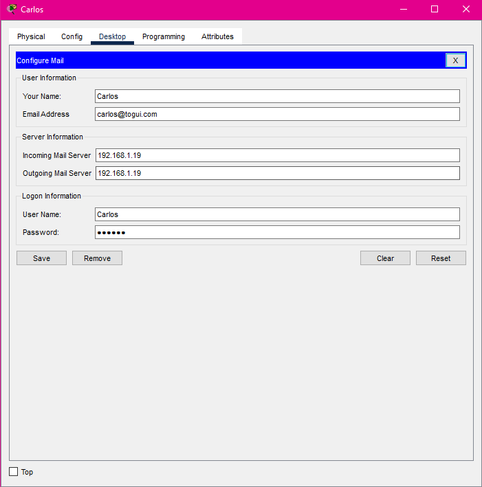
6. Acesso ao Sistema Web Hospedado no Servidor
- Para aceder ao servidor web, abrimos o navegador do computador e inserimos o endereço IP do servidor web na barra de endereços, permitindo visualizar o conteúdo do ficheiro index.html
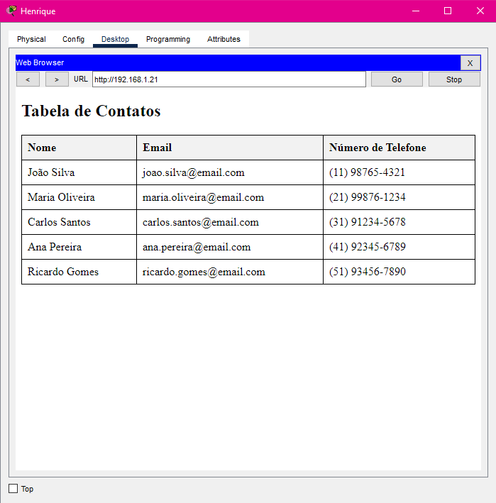
Configuração dos servidores
WEB:
- Para implementar um servidor WEB são necessários os seguintes passos:
- Definir o endereço IP, pode ser através do DHCP, e este será o domínio para a WEB
- Na secção http, edite o ficheiro index.html com o conteúdo desejado e guarde as alterações